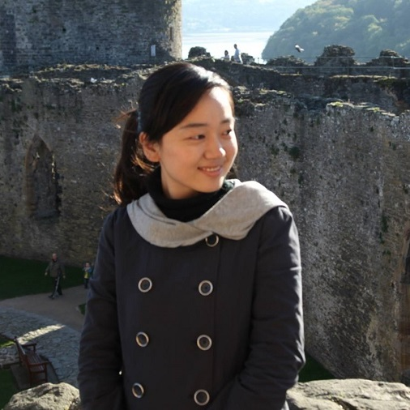

Jing Ma

About Me
I am a Data Scientist at Oath (formerly AOL.com).
In September 2016, I received a Ph.D. from the Department of Management
Science and Engineering (Operations Research) at Stanford University. My thesis advisors were Prof. Erica Plambeck and Prof. Ram Rajagopal.
I am interested in machine learning, statistics, optimization, online advertising, and operations management.
Education
- Ph.D. in Management Science and Engineering (Operations Research), Stanford University (2016)
- M.A. in Computational and Applied Mathematics, Rice University (2009)
- B.S. in Mathematics, University of Science and Technology (China) (2007)
|